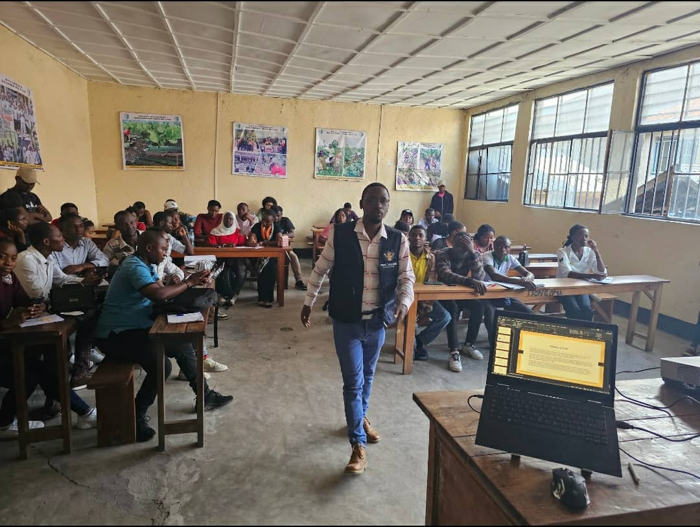
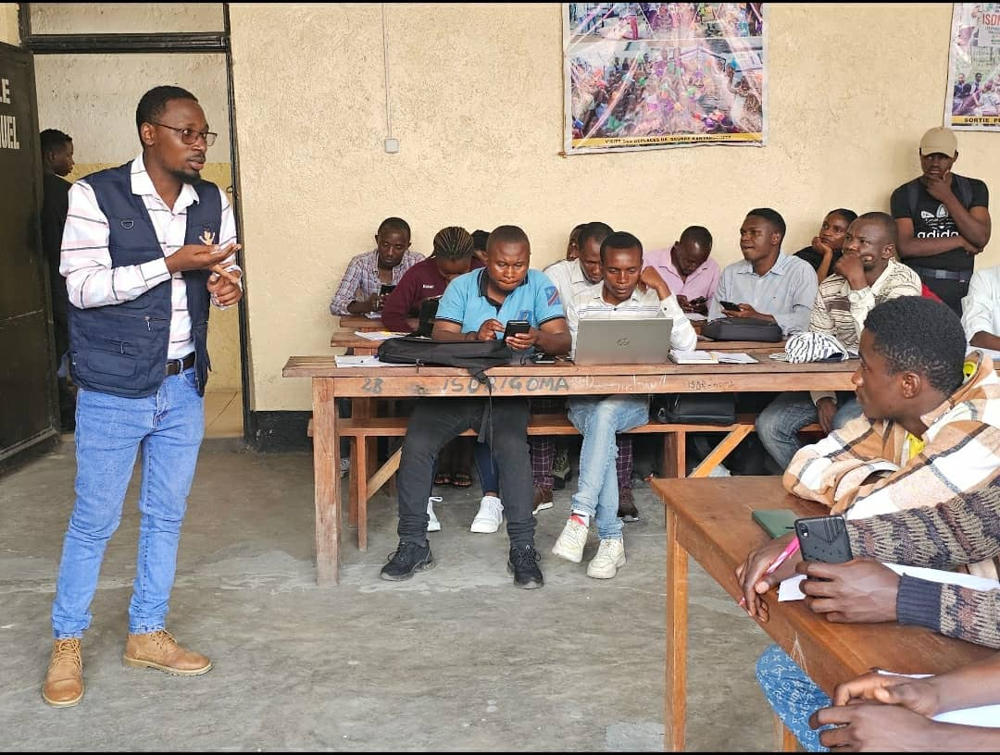
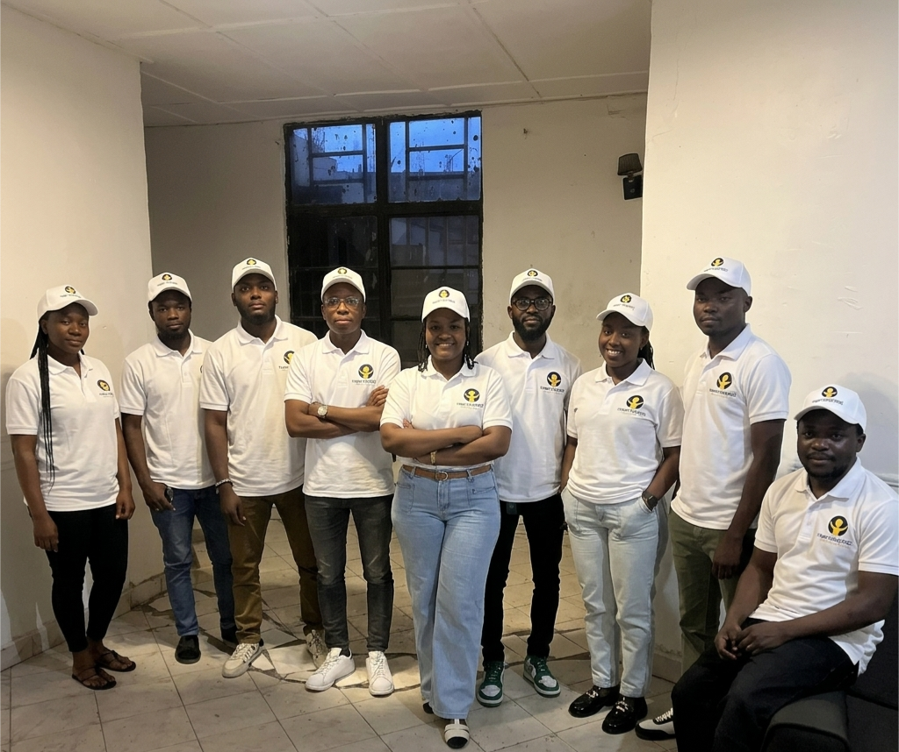

Une organisation engagée pour l'humanité
HOPE CHILD-DRC est une organisation humanitaire congolaise créée le 25 mai 2021 à Goma, dans la Province du Nord-Kivu. Nous œuvrons pour la protection, le bien-être, le développement et le renforcement de la résilience des jeunes et des communautés vulnérables affectés par les crises humanitaires.
Notre approche est communautaire et multisectorielle. Nous contribuons à promouvoir l'autonomie et la résilience des populations que nous servons, à travers des programmes intégrés dans six domaines clés.
En savoir plus sur nous« Sauvons des vies et assurons un avenir digne à chaque enfant en RDC. »
— Mission de HOPE CHILD-DRC
Domaines d'Intervention
Une approche communautaire et multisectorielle pour un impact durable
Protection
Protection des enfants vulnérables, prévention des violences et défense des droits fondamentaux.
En savoir plusÉducation
Accès à une éducation de qualité pour tous les enfants, réintégration scolaire et formation.
En savoir plusSécurité Alimentaire
Agriculture durable, nutrition et résilience climatique pour les communautés.
En savoir plusSanté & Nutrition
Réduction des maladies évitables, soins de santé et lutte contre la malnutrition.
En savoir plusWASH
Accès à l'eau potable, bonnes pratiques d'hygiène et amélioration de l'assainissement.
En savoir plusFormation Professionnelle
Entrepreneuriat, autonomisation économique et insertion socio-professionnelle.
En savoir plusDes résultats concrets
Depuis notre création en 2021, nous avons touché des centaines de vies
Où nous travaillons
Nos zones d'intervention dans la Province du Nord-Kivu
Rutshuru
Bisoko, Groupement Rugari
Éducation des adultes pour la prévention des violences et la protection des enfants
70 acteurs humanitaires formés
Nyiragongo
Turunga, Groupement Munigi
Autonomisation des filles par l'éducation et le renforcement des capacités
35 jeunes filles formées et équipées
Masisi
Bweremana, Groupement Mumpfunyi Shanga
Renforcement de la résilience climatique pour une agriculture durable
Projet en cours de réalisation

Résilience climatique pour une agriculture durable
Dans le village de Bweremana, territoire de Masisi, nous renforçons la résilience climatique des communautés à travers des pratiques agricoles durables et adaptées au changement climatique.
Ce que disent nos bénéficiaires
Ils nous accompagnent
Nos partenaires dans la mission de protection des enfants
FHOVE
ONG NationalePartenaire dans le projet de protection des enfants à Rutshuru
AVDA
ONG NationalePartenaire dans le projet de protection des enfants à Rutshuru
VIZAZI CONGO
PartenairePartenaire engagé dans les actions humanitaires de HOPE CHILD-DRC
Galerie en Images
Un aperçu de nos actions sur le terrain
 Protection
Protection
 Éducation
Éducation
 Sécurité Alimentaire
Sécurité Alimentaire


 Communauté
Communauté
Votre don peut changer une vie
Chaque contribution, quelle que soit sa taille, nous aide à protéger les enfants vulnérables, à les éduquer et à renforcer la résilience des communautés en RDC.
Vous avez des questions ?
Voici les réponses aux questions les plus courantes
Comment faire un don ?
Vous pouvez faire un don via notre page dédiée avec plusieurs moyens de paiement : virement bancaire, Mobile Money ou PayPal.
Faire un donComment devenir bénévole ?
Contactez-nous via notre page de contact en indiquant votre intérêt pour le bénévolat. Nous vous répondrons avec les opportunités disponibles.
Nous contacterOù intervenons-nous ?
Nous intervenons dans la Province du Nord-Kivu : Rutshuru, Nyiragongo et Masisi, en République Démocratique du Congo.
Voir nos zonesComment devenir partenaire ?
Remplissez le formulaire sur notre page partenaires ou contactez-nous directement par email pour discuter d'une collaboration.
Devenir partenaireVous avez d'autres questions ?
Consultez notre foire aux questions complète pour trouver toutes les réponses.